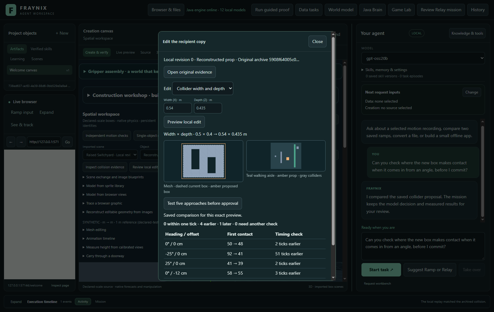
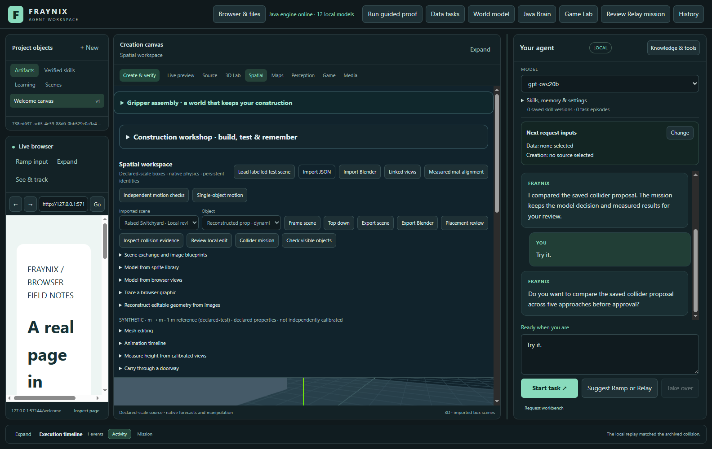
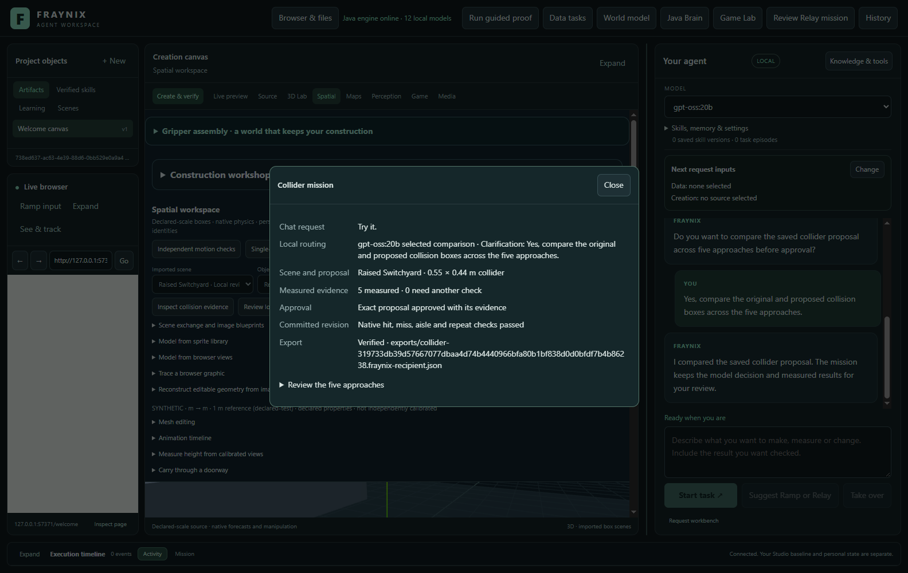

Route plain-language collider missions with a local model
gpt-oss:20b compared a saved proposal, asked a clarifying question, and routed the answer after restart. The completed mission keeps the verified export and the original evidence.

A plain-language request opened the exact collider comparison before approval

The local model asked what to measure before starting another mission

The restarted workspace reopened the completed mission and verified export
System files
Open source